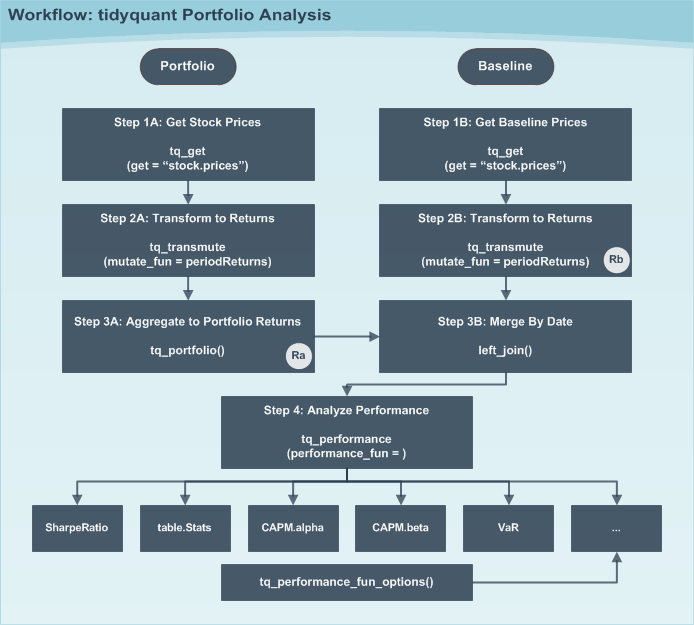
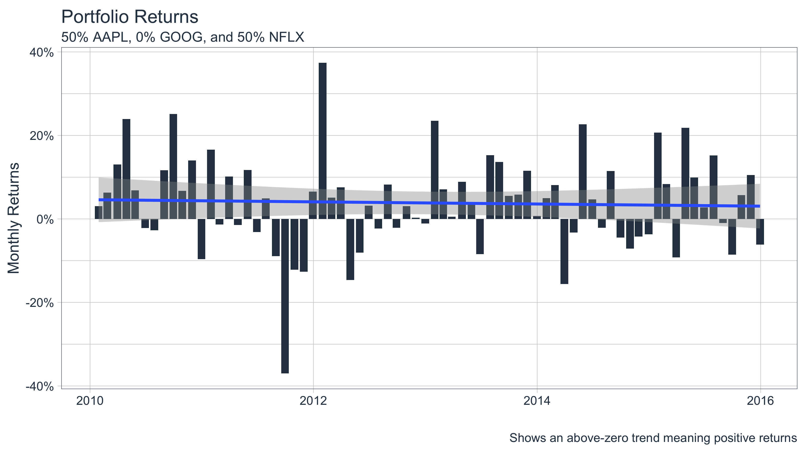
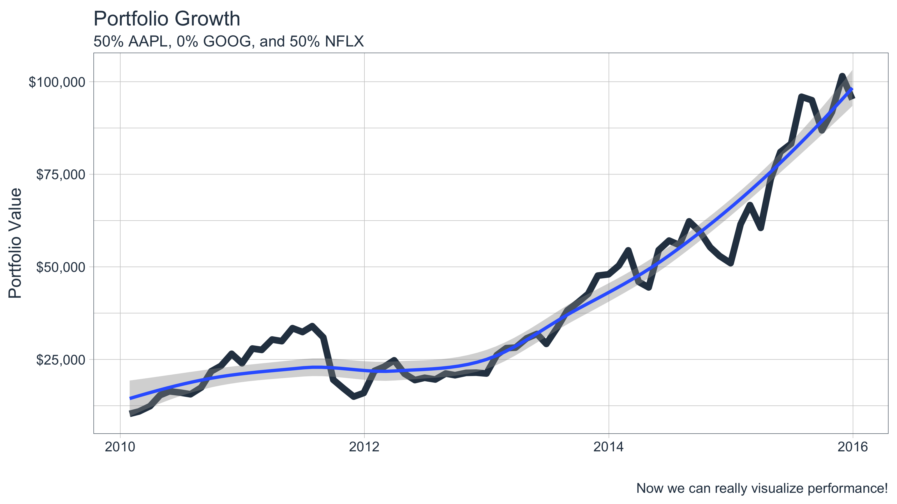
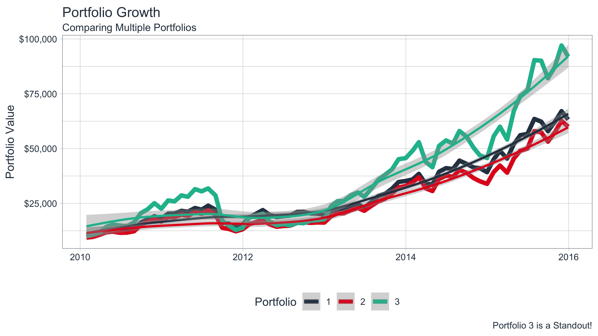

vignettes/TQ05-performance-analysis-with-tidyquant.Rmd
TQ05-performance-analysis-with-tidyquant.RmdTidy analysis of stock and portfolio return performance with
PerformanceAnalytics
Financial asset (individual stocks, securities, etc) and portfolio (groups of stocks, securities, etc) performance analysis is a deep field with a wide range of theories and methods for analyzing risk versus reward. The PerformanceAnalytics package consolidates functions to compute many of the most widely used performance metrics. tidquant integrates this functionality so it can be used at scale using the split, apply, combine framework within the tidyverse. Two primary functions integrate the performance analysis functionality:
tq_performance implements the performance analysis functions in a tidy way, enabling scaling analysis using the split, apply, combine framework.tq_portfolio provides a useful tool set for aggregating a group of individual asset returns into one or many portfolios.This vignette aims to cover three aspects of performance analysis:
The general workflow to go from start to finish on both an asset and a portfolio level
Some of the available techniques to implement once the workflow is implemented
How to customize tq_portfolio and tq_performance using the ... parameter
An important concept is that performance analysis is based on the statistical properties of returns (not prices). As a result, this package uses inputs of time-based returns as opposed to stock prices. The arguments change to Ra for the asset returns and Rb for the baseline returns. We’ll go over how to get returns in the Workflow section.
Another important concept is the baseline. The baseline is what you are measuring performance against. A baseline can be anything, but in many cases it’s a representative average of how an investment might perform with little or no effort. Often indexes such as the S&P500 are used for general market performance. Other times more specific Exchange Traded Funds (ETFs) are used such as the SPDR Technology ETF (XLK). The important concept here is that you measure the asset performance (Ra) against the baseline (Rb).
Now for a quick tutorial to show off the PerformanceAnalytics package integration.
One of the most widely used risk to return metrics is the Capital Asset Pricing Model (CAPM). According to Investopedia:
The capital asset pricing model (CAPM) is a model that describes the relationship between systematic risk and expected return for assets, particularly stocks. CAPM is widely used throughout finance for the pricing of risky securities, generating expected returns for assets given the risk of those assets and calculating costs of capital.
We’ll use the PerformanceAnalytics function, table.CAPM, to evaluate the returns of several technology stocks against the SPDR Technology ETF (XLK).
First, load the tidyquant package.
Second, get the stock returns for the stocks we wish to evaluate. We use tq_get to get stock prices from Yahoo Finance, group_by to group the stock prices related to each symbol, and tq_transmute to retrieve period returns in a monthly periodicity using the “adjusted” stock prices (adjusted for stock splits, which can throw off returns, affecting the performance analysis). Review the output and see that there are three groups of symbols indicating the data has been grouped appropriately.
Ra <- c("AAPL", "GOOG", "NFLX") %>%
tq_get(get = "stock.prices",
from = "2010-01-01",
to = "2015-12-31") %>%
group_by(symbol) %>%
tq_transmute(select = adjusted,
mutate_fun = periodReturn,
period = "monthly",
col_rename = "Ra")
Ra## # A tibble: 216 x 3
## # Groups: symbol [3]
## symbol date Ra
## <chr> <date> <dbl>
## 1 AAPL 2010-01-29 -0.103
## 2 AAPL 2010-02-26 0.0654
## 3 AAPL 2010-03-31 0.148
## 4 AAPL 2010-04-30 0.111
## 5 AAPL 2010-05-28 -0.0161
## 6 AAPL 2010-06-30 -0.0208
## 7 AAPL 2010-07-30 0.0227
## 8 AAPL 2010-08-31 -0.0550
## 9 AAPL 2010-09-30 0.167
## 10 AAPL 2010-10-29 0.0607
## # … with 206 more rowsNext, we get the baseline prices. We’ll use the XLK. Note that there is no need to group because we are just getting one data set.
Rb <- "XLK" %>%
tq_get(get = "stock.prices",
from = "2010-01-01",
to = "2015-12-31") %>%
tq_transmute(select = adjusted,
mutate_fun = periodReturn,
period = "monthly",
col_rename = "Rb")
Rb## # A tibble: 72 x 2
## date Rb
## <date> <dbl>
## 1 2010-01-29 -0.0993
## 2 2010-02-26 0.0348
## 3 2010-03-31 0.0684
## 4 2010-04-30 0.0126
## 5 2010-05-28 -0.0748
## 6 2010-06-30 -0.0540
## 7 2010-07-30 0.0745
## 8 2010-08-31 -0.0561
## 9 2010-09-30 0.117
## 10 2010-10-29 0.0578
## # … with 62 more rowsNow, we combine the two data sets using the “date” field using left_join from the dplyr package. Review the results and see that we still have three groups of returns, and columns “Ra” and “Rb” are side-by-side.
## # A tibble: 216 x 4
## # Groups: symbol [3]
## symbol date Ra Rb
## <chr> <date> <dbl> <dbl>
## 1 AAPL 2010-01-29 -0.103 -0.0993
## 2 AAPL 2010-02-26 0.0654 0.0348
## 3 AAPL 2010-03-31 0.148 0.0684
## 4 AAPL 2010-04-30 0.111 0.0126
## 5 AAPL 2010-05-28 -0.0161 -0.0748
## 6 AAPL 2010-06-30 -0.0208 -0.0540
## 7 AAPL 2010-07-30 0.0227 0.0745
## 8 AAPL 2010-08-31 -0.0550 -0.0561
## 9 AAPL 2010-09-30 0.167 0.117
## 10 AAPL 2010-10-29 0.0607 0.0578
## # … with 206 more rowsFinally, we can retrieve the performance metrics using tq_performance(). You can use tq_performance_fun_options() to see the full list of compatible performance functions.
## # A tibble: 3 x 13
## # Groups: symbol [3]
## symbol ActivePremium Alpha AnnualizedAlpha Beta `Beta-` `Beta+` Correlation
## <chr> <dbl> <dbl> <dbl> <dbl> <dbl> <dbl> <dbl>
## 1 AAPL 0.119 0.0089 0.112 1.11 0.578 1.04 0.659
## 2 GOOG 0.034 0.0028 0.034 1.14 1.39 1.16 0.644
## 3 NFLX 0.447 0.053 0.859 0.384 -1.52 0.0045 0.0817
## # … with 5 more variables: `Correlationp-value` <dbl>, InformationRatio <dbl>,
## # `R-squared` <dbl>, TrackingError <dbl>, TreynorRatio <dbl>We can quickly isolate attributes, such as alpha, the measure of growth, and beta, the measure of risk.
## # A tibble: 3 x 3
## # Groups: symbol [3]
## symbol Alpha Beta
## <chr> <dbl> <dbl>
## 1 AAPL 0.0089 1.11
## 2 GOOG 0.0028 1.14
## 3 NFLX 0.053 0.384With tidyquant it’s efficient and easy to get the CAPM information! And, that’s just one of 129 available functions to analyze stock and portfolio return performance. Just use tq_performance_fun_options() to see the full list.
The general workflow is shown in the diagram below. We’ll step through the workflow first with a group of individual assets (stocks) and then with portfolios of stocks.

Individual assets are the simplest form of analysis because there is no portfolio aggregation (Step 3A). We’ll re-do the “Quick Example” this time getting the Sharpe Ratio, a measure of reward-to-risk.
Before we get started let’s find the performance function we want to use from PerformanceAnalytics. Searching tq_performance_fun_options, we can see that SharpeRatio is available. Type ?SharpeRatio, and we can see that the arguments are:
## function (R, Rf = 0, p = 0.95, FUN = c("StdDev", "VaR", "ES"),
## weights = NULL, annualize = FALSE, ...)
## NULLWe can actually skip the baseline path because the function does not require Rb. The function takes R, which is passed using Ra in tq_performance(Ra, Rb, performance_fun, ...). A little bit of foresight saves us some work.
Use tq_get() to get stock prices.
stock_prices <- c("AAPL", "GOOG", "NFLX") %>%
tq_get(get = "stock.prices",
from = "2010-01-01",
to = "2015-12-31")
stock_prices## # A tibble: 4,527 x 8
## symbol date open high low close volume adjusted
## <chr> <date> <dbl> <dbl> <dbl> <dbl> <dbl> <dbl>
## 1 AAPL 2010-01-04 30.5 30.6 30.3 30.6 123432400 26.6
## 2 AAPL 2010-01-05 30.7 30.8 30.5 30.6 150476200 26.6
## 3 AAPL 2010-01-06 30.6 30.7 30.1 30.1 138040000 26.2
## 4 AAPL 2010-01-07 30.2 30.3 29.9 30.1 119282800 26.2
## 5 AAPL 2010-01-08 30.0 30.3 29.9 30.3 111902700 26.3
## 6 AAPL 2010-01-11 30.4 30.4 29.8 30.0 115557400 26.1
## 7 AAPL 2010-01-12 29.9 30.0 29.5 29.7 148614900 25.8
## 8 AAPL 2010-01-13 29.7 30.1 29.2 30.1 151473000 26.2
## 9 AAPL 2010-01-14 30.0 30.1 29.9 29.9 108223500 26.0
## 10 AAPL 2010-01-15 30.1 30.2 29.4 29.4 148516900 25.6
## # … with 4,517 more rowsUsing the tidyverse split, apply, combine framework, we can mutate groups of stocks by first “grouping” with group_by and then applying a mutating function using tq_transmute. We use the quantmod function periodReturn as the mutating function. We pass along the arguments period = "monthly" to return the results in monthly periodicity. Last, we use the col_rename argument to rename the output column.
stock_returns_monthly <- stock_prices %>%
group_by(symbol) %>%
tq_transmute(select = adjusted,
mutate_fun = periodReturn,
period = "monthly",
col_rename = "Ra")
stock_returns_monthly## # A tibble: 216 x 3
## # Groups: symbol [3]
## symbol date Ra
## <chr> <date> <dbl>
## 1 AAPL 2010-01-29 -0.103
## 2 AAPL 2010-02-26 0.0654
## 3 AAPL 2010-03-31 0.148
## 4 AAPL 2010-04-30 0.111
## 5 AAPL 2010-05-28 -0.0161
## 6 AAPL 2010-06-30 -0.0208
## 7 AAPL 2010-07-30 0.0227
## 8 AAPL 2010-08-31 -0.0550
## 9 AAPL 2010-09-30 0.167
## 10 AAPL 2010-10-29 0.0607
## # … with 206 more rowsStep 3A can be skipped because we are only interested in the Sharpe Ratio for individual stocks (not a portfolio).
Step 3B can also be skipped because the SharpeRatio function from PerformanceAnalytics does not require a baseline.
The last step is to apply the SharpeRatio function to our groups of stock returns. We do this using tq_performance() with the arguments Ra = Ra, Rb = NULL (not required), and performance_fun = SharpeRatio. We can also pass other arguments of the SharpeRatio function such as Rf, p, FUN, and annualize. We will just use the defaults for this example.
## # A tibble: 3 x 4
## # Groups: symbol [3]
## symbol `ESSharpe(Rf=0%,p=95%… `StdDevSharpe(Rf=0%,p=95… `VaRSharpe(Rf=0%,p=95…
## <chr> <dbl> <dbl> <dbl>
## 1 AAPL 0.173 0.292 0.218
## 2 GOOG 0.129 0.203 0.157
## 3 NFLX 0.237 0.284 0.272Now we have the Sharpe Ratio for each of the three stocks. What if we want to adjust the parameters of the function? We can just add on the arguments of the underlying function.
stock_returns_monthly %>%
tq_performance(Ra = Ra,
Rb = NULL,
performance_fun = SharpeRatio,
Rf = 0.03 / 12,
p = 0.99)## # A tibble: 3 x 4
## # Groups: symbol [3]
## symbol `ESSharpe(Rf=0.2%,p=9… `StdDevSharpe(Rf=0.2%,p=… `VaRSharpe(Rf=0.2%,p=…
## <chr> <dbl> <dbl> <dbl>
## 1 AAPL 0.116 0.258 0.134
## 2 GOOG 0.0826 0.170 0.0998
## 3 NFLX 0.115 0.272 0.142Portfolios are slightly more complicated because we are now dealing with groups of assets versus individual stocks, and we need to aggregate weighted returns. Fortunately, this is only one extra step with tidyquant using tq_portfolio().
Let’s recreate the CAPM analysis in the “Quick Example” this time comparing a portfolio of technology stocks to the SPDR Technology ETF (XLK).
This is the same as what we did previously to get the monthly returns for groups of individual stock prices. We use the split, apply, combine framework using the workflow of tq_get, group_by, and tq_transmute.
stock_returns_monthly <- c("AAPL", "GOOG", "NFLX") %>%
tq_get(get = "stock.prices",
from = "2010-01-01",
to = "2015-12-31") %>%
group_by(symbol) %>%
tq_transmute(select = adjusted,
mutate_fun = periodReturn,
period = "monthly",
col_rename = "Ra")
stock_returns_monthly## # A tibble: 216 x 3
## # Groups: symbol [3]
## symbol date Ra
## <chr> <date> <dbl>
## 1 AAPL 2010-01-29 -0.103
## 2 AAPL 2010-02-26 0.0654
## 3 AAPL 2010-03-31 0.148
## 4 AAPL 2010-04-30 0.111
## 5 AAPL 2010-05-28 -0.0161
## 6 AAPL 2010-06-30 -0.0208
## 7 AAPL 2010-07-30 0.0227
## 8 AAPL 2010-08-31 -0.0550
## 9 AAPL 2010-09-30 0.167
## 10 AAPL 2010-10-29 0.0607
## # … with 206 more rowsThis was also done previously.
baseline_returns_monthly <- "XLK" %>%
tq_get(get = "stock.prices",
from = "2010-01-01",
to = "2015-12-31") %>%
tq_transmute(select = adjusted,
mutate_fun = periodReturn,
period = "monthly",
col_rename = "Rb")
baseline_returns_monthly## # A tibble: 72 x 2
## date Rb
## <date> <dbl>
## 1 2010-01-29 -0.0993
## 2 2010-02-26 0.0348
## 3 2010-03-31 0.0684
## 4 2010-04-30 0.0126
## 5 2010-05-28 -0.0748
## 6 2010-06-30 -0.0540
## 7 2010-07-30 0.0745
## 8 2010-08-31 -0.0561
## 9 2010-09-30 0.117
## 10 2010-10-29 0.0578
## # … with 62 more rowsThe tidyquant function, tq_portfolio() aggregates a group of individual assets into a single return using a weighted composition of the underlying assets. To do this we need to first develop portfolio weights. There are two ways to do this for a single portfolio:
Suppose we want to split our portfolio evenly between AAPL and NFLX. We’ll show this using both methods.
We’ll use the weight vector, c(0.5, 0, 0.5). Two important aspects to supplying a numeric vector of weights: First, notice that the length (3) is equal to the number of assets (3). This is a requirement. Second, notice that the sum of the weighting vector is equal to 1. This is not “required”, but is best practice. If the sum is not 1, the weights will be distributed accordingly by scaling the vector to 1, and a warning message will appear.
wts <- c(0.5, 0.0, 0.5)
portfolio_returns_monthly <- stock_returns_monthly %>%
tq_portfolio(assets_col = symbol,
returns_col = Ra,
weights = wts,
col_rename = "Ra")
portfolio_returns_monthly## # A tibble: 72 x 2
## date Ra
## <date> <dbl>
## 1 2010-01-29 0.0307
## 2 2010-02-26 0.0629
## 3 2010-03-31 0.130
## 4 2010-04-30 0.239
## 5 2010-05-28 0.0682
## 6 2010-06-30 -0.0219
## 7 2010-07-30 -0.0272
## 8 2010-08-31 0.116
## 9 2010-09-30 0.251
## 10 2010-10-29 0.0674
## # … with 62 more rowsWe now have an aggregated portfolio that is a 50/50 blend of AAPL and NFLX.
You may be asking why didn’t we use GOOG? The important thing to understand is that all of the assets from the asset returns don’t need to be used when creating the portfolio! This enables us to scale individual stock returns and then vary weights to optimize the portfolio (this will be a further subject that we address in the future!)
A possibly more useful method of aggregating returns is using a tibble of symbols and weights that are mapped to the portfolio. We’ll recreate the previous portfolio example using mapped weights.
## # A tibble: 2 x 2
## symbols weights
## <chr> <dbl>
## 1 AAPL 0.5
## 2 NFLX 0.5Next, supply this two column tibble, with symbols in the first column and weights in the second, to the weights argument in tq_performance().
stock_returns_monthly %>%
tq_portfolio(assets_col = symbol,
returns_col = Ra,
weights = wts_map,
col_rename = "Ra_using_wts_map")## # A tibble: 72 x 2
## date Ra_using_wts_map
## <date> <dbl>
## 1 2010-01-29 0.0307
## 2 2010-02-26 0.0629
## 3 2010-03-31 0.130
## 4 2010-04-30 0.239
## 5 2010-05-28 0.0682
## 6 2010-06-30 -0.0219
## 7 2010-07-30 -0.0272
## 8 2010-08-31 0.116
## 9 2010-09-30 0.251
## 10 2010-10-29 0.0674
## # … with 62 more rowsThe aggregated returns are exactly the same. The advantage with this method is that not all symbols need to be specified. Any symbol not specified by default gets a weight of zero.
Now, imagine if you had an entire index, such as the Russell 2000, of 2000 individual stock returns in a nice tidy data frame. It would be very easy to adjust portfolios and compute blended returns, and you only need to supply the symbols that you want to blend. All other symbols default to zero!
Now that we have the aggregated portfolio returns (“Ra”) from Step 3A and the baseline returns (“Rb”) from Step 2B, we can merge to get our consolidated table of asset and baseline returns. Nothing new here.
RaRb_single_portfolio <- left_join(portfolio_returns_monthly,
baseline_returns_monthly,
by = "date")
RaRb_single_portfolio## # A tibble: 72 x 3
## date Ra Rb
## <date> <dbl> <dbl>
## 1 2010-01-29 0.0307 -0.0993
## 2 2010-02-26 0.0629 0.0348
## 3 2010-03-31 0.130 0.0684
## 4 2010-04-30 0.239 0.0126
## 5 2010-05-28 0.0682 -0.0748
## 6 2010-06-30 -0.0219 -0.0540
## 7 2010-07-30 -0.0272 0.0745
## 8 2010-08-31 0.116 -0.0561
## 9 2010-09-30 0.251 0.117
## 10 2010-10-29 0.0674 0.0578
## # … with 62 more rowsThe CAPM table is computed with the function table.CAPM from PerformanceAnalytics. We just perform the same task that we performed in the “Quick Example”.
## # A tibble: 1 x 12
## ActivePremium Alpha AnnualizedAlpha Beta `Beta-` `Beta+` Correlation
## <dbl> <dbl> <dbl> <dbl> <dbl> <dbl> <dbl>
## 1 0.327 0.0299 0.425 0.754 -0.243 0.503 0.283
## # … with 5 more variables: `Correlationp-value` <dbl>, InformationRatio <dbl>,
## # `R-squared` <dbl>, TrackingError <dbl>, TreynorRatio <dbl>Now we have the CAPM performance metrics for a portfolio! While this is cool, it’s cooler to do multiple portfolios. Let’s see how.
Once you understand the process for a single portfolio using Step 3A, Method 2 (aggregating weights by mapping), scaling to multiple portfolios is just building on this concept. Let’s recreate the same example from the “Single Portfolio” Example this time with three portfolios:
First, get individual asset returns grouped by asset, which is the exact same as Steps 1A and 1B from the Single Portfolio example.
stock_returns_monthly <- c("AAPL", "GOOG", "NFLX") %>%
tq_get(get = "stock.prices",
from = "2010-01-01",
to = "2015-12-31") %>%
group_by(symbol) %>%
tq_transmute(select = adjusted,
mutate_fun = periodReturn,
period = "monthly",
col_rename = "Ra")Second, get baseline asset returns, which is the exact same as Steps 1B and 2B from the Single Portfolio example.
This is where it gets fun. If you picked up on Single Portfolio, Step3A, Method 2 (mapping weights), this is just an extension for multiple portfolios.
First, we need to grow our portfolios. tidyquant has a handy, albeit simple, function, tq_repeat_df(), for scaling a single portfolio to many. It takes a data frame, and the number of repeats, n, and the index_col_name, which adds a sequential index. Let’s see how it works for our example. We need three portfolios:
stock_returns_monthly_multi <- stock_returns_monthly %>%
tq_repeat_df(n = 3)
stock_returns_monthly_multi## # A tibble: 648 x 4
## # Groups: portfolio [3]
## portfolio symbol date Ra
## <int> <chr> <date> <dbl>
## 1 1 AAPL 2010-01-29 -0.103
## 2 1 AAPL 2010-02-26 0.0654
## 3 1 AAPL 2010-03-31 0.148
## 4 1 AAPL 2010-04-30 0.111
## 5 1 AAPL 2010-05-28 -0.0161
## 6 1 AAPL 2010-06-30 -0.0208
## 7 1 AAPL 2010-07-30 0.0227
## 8 1 AAPL 2010-08-31 -0.0550
## 9 1 AAPL 2010-09-30 0.167
## 10 1 AAPL 2010-10-29 0.0607
## # … with 638 more rowsExamining the results, we can see that a few things happened:
tq_repeat_df: it grows the data frame length-wise, repeating the data frame n times. In our case, n = 3.tq_portfolio from blending on the individual stocks. tq_portfolio only works on groups of stocks.tq_portfolio that multiple groups exist to analyze. Just note that for multiple portfolio analysis, the “portfolio” column name is required.tq_portfolio will split, apply (aggregate), then combine on.Now the tricky part: We need a new table of weights to map on. There’s a few requirements:
Here’s what the weights table should look like for our example:
weights <- c(
0.50, 0.25, 0.25,
0.25, 0.50, 0.25,
0.25, 0.25, 0.50
)
stocks <- c("AAPL", "GOOG", "NFLX")
weights_table <- tibble(stocks) %>%
tq_repeat_df(n = 3) %>%
bind_cols(tibble(weights)) %>%
group_by(portfolio)
weights_table## # A tibble: 9 x 3
## # Groups: portfolio [3]
## portfolio stocks weights
## <int> <chr> <dbl>
## 1 1 AAPL 0.5
## 2 1 GOOG 0.25
## 3 1 NFLX 0.25
## 4 2 AAPL 0.25
## 5 2 GOOG 0.5
## 6 2 NFLX 0.25
## 7 3 AAPL 0.25
## 8 3 GOOG 0.25
## 9 3 NFLX 0.5Now just pass the the expanded stock_returns_monthly_multi and the weights_table to tq_portfolio for portfolio aggregation.
portfolio_returns_monthly_multi <- stock_returns_monthly_multi %>%
tq_portfolio(assets_col = symbol,
returns_col = Ra,
weights = weights_table,
col_rename = "Ra")
portfolio_returns_monthly_multi## # A tibble: 216 x 3
## # Groups: portfolio [3]
## portfolio date Ra
## <int> <date> <dbl>
## 1 1 2010-01-29 -0.0489
## 2 1 2010-02-26 0.0482
## 3 1 2010-03-31 0.123
## 4 1 2010-04-30 0.145
## 5 1 2010-05-28 0.0245
## 6 1 2010-06-30 -0.0308
## 7 1 2010-07-30 0.000600
## 8 1 2010-08-31 0.0474
## 9 1 2010-09-30 0.222
## 10 1 2010-10-29 0.0789
## # … with 206 more rowsLet’s assess the output. We now have a single, “long” format data frame of portfolio returns. It has three groups with the aggregated portfolios blended by mapping the weight_table.
These steps are the exact same as the Single Portfolio example.
First, we merge with the baseline using “date” as the key.
RaRb_multiple_portfolio <- left_join(portfolio_returns_monthly_multi,
baseline_returns_monthly,
by = "date")
RaRb_multiple_portfolio## # A tibble: 216 x 4
## # Groups: portfolio [3]
## portfolio date Ra Rb
## <int> <date> <dbl> <dbl>
## 1 1 2010-01-29 -0.0489 -0.0993
## 2 1 2010-02-26 0.0482 0.0348
## 3 1 2010-03-31 0.123 0.0684
## 4 1 2010-04-30 0.145 0.0126
## 5 1 2010-05-28 0.0245 -0.0748
## 6 1 2010-06-30 -0.0308 -0.0540
## 7 1 2010-07-30 0.000600 0.0745
## 8 1 2010-08-31 0.0474 -0.0561
## 9 1 2010-09-30 0.222 0.117
## 10 1 2010-10-29 0.0789 0.0578
## # … with 206 more rowsFinally, we calculate the performance of each of the portfolios using tq_performance. Make sure the data frame is grouped on “portfolio”.
## # A tibble: 3 x 13
## # Groups: portfolio [3]
## portfolio ActivePremium Alpha AnnualizedAlpha Beta `Beta-` `Beta+`
## <int> <dbl> <dbl> <dbl> <dbl> <dbl> <dbl>
## 1 1 0.231 0.0193 0.258 0.908 0.312 0.741
## 2 2 0.219 0.0192 0.256 0.886 0.436 0.660
## 3 3 0.319 0.0308 0.439 0.721 -0.179 0.394
## # … with 6 more variables: Correlation <dbl>, `Correlationp-value` <dbl>,
## # InformationRatio <dbl>, `R-squared` <dbl>, TrackingError <dbl>,
## # TreynorRatio <dbl>Inspecting the results, we now have a multiple portfolio comparison of the CAPM table from PerformanceAnalytics. We can do the same thing with SharpeRatio as well.
## # A tibble: 3 x 4
## # Groups: portfolio [3]
## portfolio `ESSharpe(Rf=0%,p=95… `StdDevSharpe(Rf=0%,p=9… `VaRSharpe(Rf=0%,p=9…
## <int> <dbl> <dbl> <dbl>
## 1 1 0.172 0.355 0.263
## 2 2 0.146 0.334 0.236
## 3 3 0.150 0.317 0.238We’ve only scratched the surface of the analysis functions available through PerformanceAnalytics. The list below includes all of the compatible functions grouped by function type. The table functions are the most useful to get a cross section of metrics. We’ll touch on a few. We’ll also go over VaR and SharpeRatio as these are very commonly used as performance measures.
## $table.funs
## [1] "table.AnnualizedReturns" "table.Arbitrary"
## [3] "table.Autocorrelation" "table.CAPM"
## [5] "table.CaptureRatios" "table.Correlation"
## [7] "table.Distributions" "table.DownsideRisk"
## [9] "table.DownsideRiskRatio" "table.DrawdownsRatio"
## [11] "table.HigherMoments" "table.InformationRatio"
## [13] "table.RollingPeriods" "table.SFM"
## [15] "table.SpecificRisk" "table.Stats"
## [17] "table.TrailingPeriods" "table.UpDownRatios"
## [19] "table.Variability"
##
## $CAPM.funs
## [1] "CAPM.alpha" "CAPM.beta" "CAPM.beta.bear" "CAPM.beta.bull"
## [5] "CAPM.CML" "CAPM.CML.slope" "CAPM.dynamic" "CAPM.epsilon"
## [9] "CAPM.jensenAlpha" "CAPM.RiskPremium" "CAPM.SML.slope" "TimingRatio"
## [13] "MarketTiming"
##
## $SFM.funs
## [1] "SFM.alpha" "SFM.beta" "SFM.CML" "SFM.CML.slope"
## [5] "SFM.dynamic" "SFM.epsilon" "SFM.jensenAlpha"
##
## $descriptive.funs
## [1] "mean" "sd" "min" "max"
## [5] "cor" "mean.geometric" "mean.stderr" "mean.LCL"
## [9] "mean.UCL"
##
## $annualized.funs
## [1] "Return.annualized" "Return.annualized.excess"
## [3] "sd.annualized" "SharpeRatio.annualized"
##
## $VaR.funs
## [1] "VaR" "ES" "ETL" "CDD" "CVaR"
##
## $moment.funs
## [1] "var" "cov" "skewness" "kurtosis"
## [5] "CoVariance" "CoSkewness" "CoSkewnessMatrix" "CoKurtosis"
## [9] "CoKurtosisMatrix" "M3.MM" "M4.MM" "BetaCoVariance"
## [13] "BetaCoSkewness" "BetaCoKurtosis"
##
## $drawdown.funs
## [1] "AverageDrawdown" "AverageLength" "AverageRecovery"
## [4] "DrawdownDeviation" "DrawdownPeak" "maxDrawdown"
##
## $Bacon.risk.funs
## [1] "MeanAbsoluteDeviation" "Frequency" "SharpeRatio"
## [4] "MSquared" "MSquaredExcess" "HurstIndex"
##
## $Bacon.regression.funs
## [1] "CAPM.alpha" "CAPM.beta" "CAPM.epsilon" "CAPM.jensenAlpha"
## [5] "SystematicRisk" "SpecificRisk" "TotalRisk" "TreynorRatio"
## [9] "AppraisalRatio" "FamaBeta" "Selectivity" "NetSelectivity"
##
## $Bacon.relative.risk.funs
## [1] "ActivePremium" "ActiveReturn" "TrackingError" "InformationRatio"
##
## $Bacon.drawdown.funs
## [1] "PainIndex" "PainRatio" "CalmarRatio" "SterlingRatio"
## [5] "BurkeRatio" "MartinRatio" "UlcerIndex"
##
## $Bacon.downside.risk.funs
## [1] "DownsideDeviation" "DownsidePotential" "DownsideFrequency"
## [4] "SemiDeviation" "SemiVariance" "UpsideRisk"
## [7] "UpsidePotentialRatio" "UpsideFrequency" "BernardoLedoitRatio"
## [10] "DRatio" "Omega" "OmegaSharpeRatio"
## [13] "OmegaExcessReturn" "SortinoRatio" "M2Sortino"
## [16] "Kappa" "VolatilitySkewness" "AdjustedSharpeRatio"
## [19] "SkewnessKurtosisRatio" "ProspectRatio"
##
## $misc.funs
## [1] "KellyRatio" "Modigliani" "UpDownRatios"Returns a basic set of statistics that match the period of the data passed in (e.g., monthly returns will get monthly statistics, daily will be daily stats, and so on).
## # A tibble: 3 x 17
## # Groups: portfolio [3]
## portfolio ArithmeticMean GeometricMean Kurtosis `LCLMean(0.95)` Maximum Median
## <int> <dbl> <dbl> <dbl> <dbl> <dbl> <dbl>
## 1 1 0.0293 0.0259 1.14 0.0099 0.222 0.0307
## 2 2 0.029 0.0252 1.65 0.0086 0.227 0.037
## 3 3 0.0388 0.0313 1.81 0.01 0.370 0.046
## # … with 10 more variables: Minimum <dbl>, NAs <dbl>, Observations <dbl>,
## # Quartile1 <dbl>, Quartile3 <dbl>, SEMean <dbl>, Skewness <dbl>,
## # Stdev <dbl>, `UCLMean(0.95)` <dbl>, Variance <dbl>Takes a set of returns and relates them to a benchmark return. Provides a set of measures related to an excess return single factor model, or CAPM.
## # A tibble: 3 x 13
## # Groups: portfolio [3]
## portfolio ActivePremium Alpha AnnualizedAlpha Beta `Beta-` `Beta+`
## <int> <dbl> <dbl> <dbl> <dbl> <dbl> <dbl>
## 1 1 0.231 0.0193 0.258 0.908 0.312 0.741
## 2 2 0.219 0.0192 0.256 0.886 0.436 0.660
## 3 3 0.319 0.0308 0.439 0.721 -0.179 0.394
## # … with 6 more variables: Correlation <dbl>, `Correlationp-value` <dbl>,
## # InformationRatio <dbl>, `R-squared` <dbl>, TrackingError <dbl>,
## # TreynorRatio <dbl>Table of Annualized Return, Annualized Std Dev, and Annualized Sharpe.
RaRb_multiple_portfolio %>%
tq_performance(Ra = Ra, Rb = NULL, performance_fun = table.AnnualizedReturns)## # A tibble: 3 x 4
## # Groups: portfolio [3]
## portfolio AnnualizedReturn `AnnualizedSharpe(Rf=0%)` AnnualizedStdDev
## <int> <dbl> <dbl> <dbl>
## 1 1 0.360 1.26 0.286
## 2 2 0.348 1.16 0.301
## 3 3 0.448 1.06 0.424This is a wrapper for calculating correlation and significance against each column of the data provided.
## # A tibble: 3 x 5
## # Groups: portfolio [3]
## portfolio `p-value` `Lower CI` `Upper CI` to.Rb
## <int> <dbl> <dbl> <dbl> <dbl>
## 1 1 0.0000284 0.270 0.634 0.472
## 2 2 0.000122 0.229 0.608 0.438
## 3 3 0.0325 0.0220 0.457 0.252Creates a table of estimates of downside risk measures for comparison across multiple instruments or funds.
RaRb_multiple_portfolio %>%
tq_performance(Ra = Ra, Rb = NULL, performance_fun = table.DownsideRisk)## # A tibble: 3 x 12
## # Groups: portfolio [3]
## portfolio `DownsideDeviat… `DownsideDeviat… `DownsideDeviat… GainDeviation
## <int> <dbl> <dbl> <dbl> <dbl>
## 1 1 0.045 0.0488 0.045 0.0538
## 2 2 0.0501 0.0538 0.0501 0.0528
## 3 3 0.0684 0.0721 0.0684 0.0831
## # … with 7 more variables: `HistoricalES(95%)` <dbl>,
## # `HistoricalVaR(95%)` <dbl>, LossDeviation <dbl>, MaximumDrawdown <dbl>,
## # `ModifiedES(95%)` <dbl>, `ModifiedVaR(95%)` <dbl>, SemiDeviation <dbl>Table of Monthly downside risk, Annualized downside risk, Downside potential, Omega, Sortino ratio, Upside potential, Upside potential ratio and Omega-Sharpe ratio.
RaRb_multiple_portfolio %>%
tq_performance(Ra = Ra, Rb = NULL, performance_fun = table.DownsideRiskRatio)## # A tibble: 3 x 9
## # Groups: portfolio [3]
## portfolio Annualiseddowns… Downsidepotenti… monthlydownside… Omega
## <int> <dbl> <dbl> <dbl> <dbl>
## 1 1 0.156 0.0198 0.045 2.48
## 2 2 0.173 0.0217 0.0501 2.34
## 3 3 0.237 0.0294 0.0684 2.32
## # … with 4 more variables: `Omega-sharperatio` <dbl>, Sortinoratio <dbl>,
## # Upsidepotential <dbl>, Upsidepotentialratio <dbl>Summary of the higher moments and Co-Moments of the return distribution. Used to determine diversification potential. Also called “systematic” moments by several papers.
## # A tibble: 3 x 6
## # Groups: portfolio [3]
## portfolio BetaCoKurtosis BetaCoSkewness BetaCoVariance CoKurtosis CoSkewness
## <int> <dbl> <dbl> <dbl> <dbl> <dbl>
## 1 1 0.756 0.196 0.908 0 0
## 2 2 0.772 1.71 0.886 0 0
## 3 3 0.455 0.369 0.721 0 0Table of Tracking error, Annualized tracking error and Information ratio.
RaRb_multiple_portfolio %>%
tq_performance(Ra = Ra, Rb = Rb, performance_fun = table.InformationRatio)## # A tibble: 3 x 4
## # Groups: portfolio [3]
## portfolio AnnualisedTrackingError InformationRatio TrackingError
## <int> <dbl> <dbl> <dbl>
## 1 1 0.252 0.917 0.0728
## 2 2 0.271 0.809 0.0782
## 3 3 0.412 0.774 0.119Table of Mean absolute difference, Monthly standard deviation and annualized standard deviation.
## # A tibble: 3 x 4
## # Groups: portfolio [3]
## portfolio AnnualizedStdDev MeanAbsolutedeviation monthlyStdDev
## <int> <dbl> <dbl> <dbl>
## 1 1 0.286 0.0658 0.0825
## 2 2 0.301 0.0679 0.0868
## 3 3 0.424 0.091 0.122One of the best features of tq_portfolio and tq_performance is to be able to pass features through to the underlying functions. After all, these are just wrappers for PerformanceAnalytics, so you probably want to be able to make full use of the underlying functions. Passing through parameters using the ... can be incredibly useful, so let’s see how.
The tq_portfolio function is a wrapper for Return.portfolio. This means that during the portfolio aggregation process, we can make use of most of the Return.portfolio arguments such as wealth.index, contribution, geometric, rebalance_on, and value. Here’s the arguments of the underlying function:
## function (R, weights = NULL, wealth.index = FALSE, contribution = FALSE,
## geometric = TRUE, rebalance_on = c(NA, "years", "quarters",
## "months", "weeks", "days"), value = 1, verbose = FALSE,
## ...)
## NULLLet’s see an example of passing parameters to the .... Suppose we want to instead see how our money is grows for a $10,000 investment. We’ll use the “Single Portfolio” example, where our portfolio mix was 50% AAPL, 0% GOOG, and 50% NFLX.
Method 3A, Aggregating Portfolio Returns, showed us two methods to aggregate for a single portfolio. Either will work for this example. For simplicity, we’ll examine the first.
Here’s the original output, without adjusting parameters.
wts <- c(0.5, 0.0, 0.5)
portfolio_returns_monthly <- stock_returns_monthly %>%
tq_portfolio(assets_col = symbol,
returns_col = Ra,
weights = wts,
col_rename = "Ra")portfolio_returns_monthly %>%
ggplot(aes(x = date, y = Ra)) +
geom_bar(stat = "identity", fill = palette_light()[[1]]) +
labs(title = "Portfolio Returns",
subtitle = "50% AAPL, 0% GOOG, and 50% NFLX",
caption = "Shows an above-zero trend meaning positive returns",
x = "", y = "Monthly Returns") +
geom_smooth(method = "lm") +
theme_tq() +
scale_color_tq() +
scale_y_continuous(labels = scales::percent)
This is good, but we want to see how our $10,000 initial investment is growing. This is simple with the underlying Return.portfolio argument, wealth.index = TRUE. All we need to do is add these as additional parameters to tq_portfolio!
wts <- c(0.5, 0, 0.5)
portfolio_growth_monthly <- stock_returns_monthly %>%
tq_portfolio(assets_col = symbol,
returns_col = Ra,
weights = wts,
col_rename = "investment.growth",
wealth.index = TRUE) %>%
mutate(investment.growth = investment.growth * 10000)portfolio_growth_monthly %>%
ggplot(aes(x = date, y = investment.growth)) +
geom_line(size = 2, color = palette_light()[[1]]) +
labs(title = "Portfolio Growth",
subtitle = "50% AAPL, 0% GOOG, and 50% NFLX",
caption = "Now we can really visualize performance!",
x = "", y = "Portfolio Value") +
geom_smooth(method = "loess") +
theme_tq() +
scale_color_tq() +
scale_y_continuous(labels = scales::dollar)
Finally, taking this one step further, we apply the same process to the “Multiple Portfolio” example:
portfolio_growth_monthly_multi <- stock_returns_monthly_multi %>%
tq_portfolio(assets_col = symbol,
returns_col = Ra,
weights = weights_table,
col_rename = "investment.growth",
wealth.index = TRUE) %>%
mutate(investment.growth = investment.growth * 10000)portfolio_growth_monthly_multi %>%
ggplot(aes(x = date, y = investment.growth, color = factor(portfolio))) +
geom_line(size = 2) +
labs(title = "Portfolio Growth",
subtitle = "Comparing Multiple Portfolios",
caption = "Portfolio 3 is a Standout!",
x = "", y = "Portfolio Value",
color = "Portfolio") +
geom_smooth(method = "loess") +
theme_tq() +
scale_color_tq() +
scale_y_continuous(labels = scales::dollar)
Finally, the same concept of passing arguments works with all the tidyquant functions that are wrappers including tq_transmute, tq_mutate, tq_performance, etc. Let’s use a final example with the SharpeRatio, which has the following arguments.
## function (R, Rf = 0, p = 0.95, FUN = c("StdDev", "VaR", "ES"),
## weights = NULL, annualize = FALSE, ...)
## NULLWe can see that the parameters Rf allows us to apply a risk-free rate and p allows us to vary the confidence interval. Let’s compare the Sharpe ratio with an annualized risk-free rate of 3% and a confidence interval of 0.99.
Default:
## # A tibble: 3 x 4
## # Groups: portfolio [3]
## portfolio `ESSharpe(Rf=0%,p=95… `StdDevSharpe(Rf=0%,p=9… `VaRSharpe(Rf=0%,p=9…
## <int> <dbl> <dbl> <dbl>
## 1 1 0.172 0.355 0.263
## 2 2 0.146 0.334 0.236
## 3 3 0.150 0.317 0.238With Rf = 0.03 / 12 (adjusted for monthly periodicity):
## # A tibble: 3 x 4
## # Groups: portfolio [3]
## portfolio `ESSharpe(Rf=0.2%,p=9… `StdDevSharpe(Rf=0.2%,… `VaRSharpe(Rf=0.2%,p…
## <int> <dbl> <dbl> <dbl>
## 1 1 0.157 0.325 0.241
## 2 2 0.134 0.305 0.216
## 3 3 0.141 0.296 0.222And, with both Rf = 0.03 / 12 (adjusted for monthly periodicity) and p = 0.99:
RaRb_multiple_portfolio %>%
tq_performance(Ra = Ra,
performance_fun = SharpeRatio,
Rf = 0.03 / 12,
p = 0.99)## # A tibble: 3 x 4
## # Groups: portfolio [3]
## portfolio `ESSharpe(Rf=0.2%,p=9… `StdDevSharpe(Rf=0.2%,… `VaRSharpe(Rf=0.2%,p…
## <int> <dbl> <dbl> <dbl>
## 1 1 0.105 0.325 0.134
## 2 2 0.0952 0.305 0.115
## 3 3 0.0915 0.296 0.117